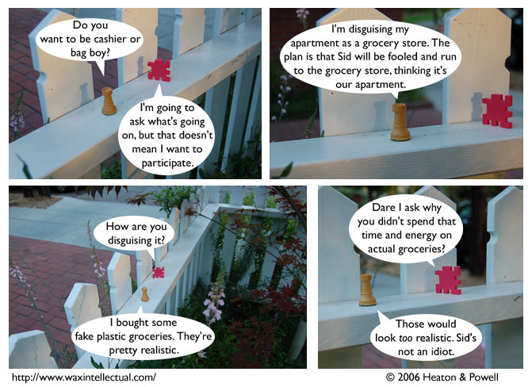

Strip #12
— Monday, July 10, 2006
Some fake grocery stores don’t allow women to be bag boys, but Stephen isn’t sexist.
Notes, Thoughts, &c.
Ben’s Notes
This is the first appearance of Gil Sans Italic! I’m not completely happy with it, but it works well enough.
Also noteworthy: this strip continues the Terror Island tradition of strips with Liln being set outside. That white fence they’re on is, in reality, a white fence outside my house.
Lewis’s Notes
I got bored this weekend, and made up faction tags for all the different factions. You can read about what is going on with these in this forum post. Here they are:


I also drew two shots of a merdog, who is tentatively named Scruffy McBubbles. This is entirely unrelated to Terror Island. But I think he’s cute.